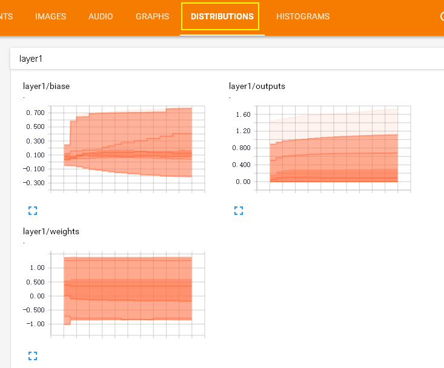
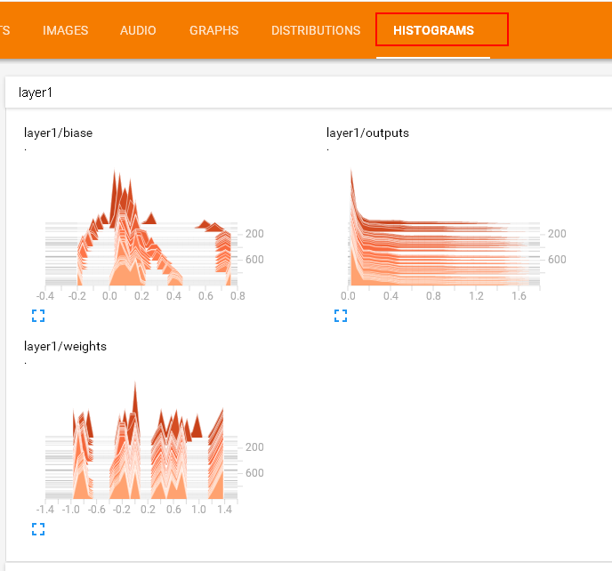
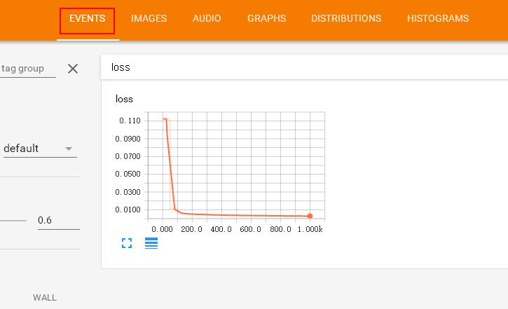
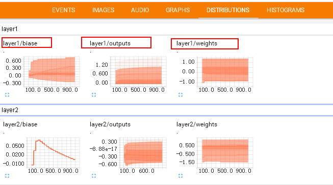
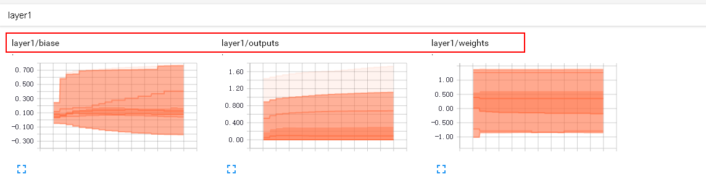
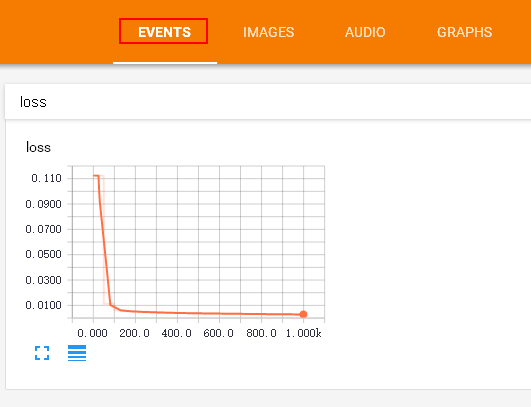
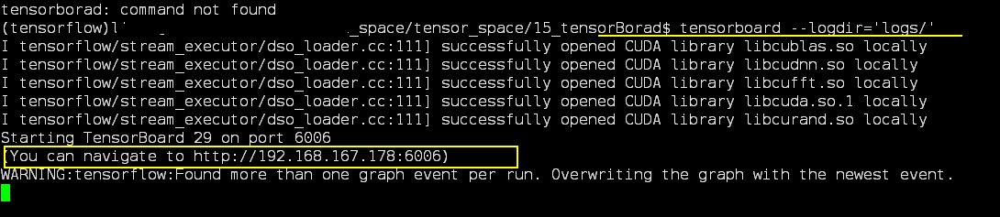
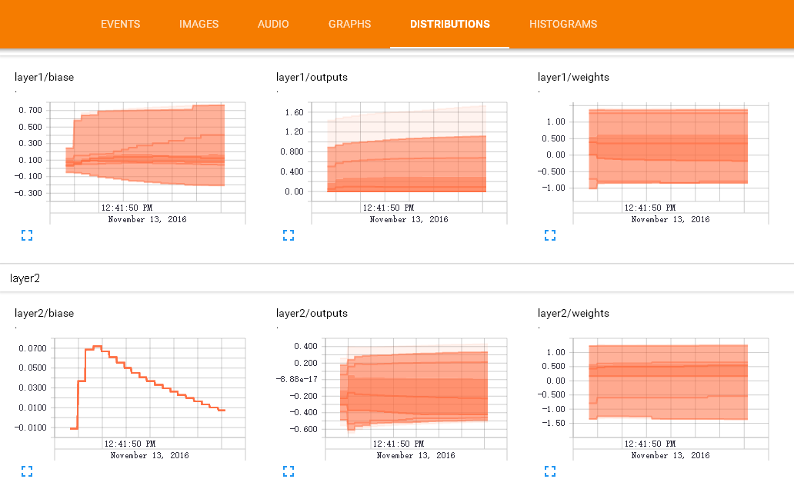

Tensorboard 可视化好帮手 2
作者: 灰猫 编辑: 莫烦 2016-11-03
学习资料:
要点
注意: 本节内容会用到浏览器, 而且与 tensorboard 兼容的浏览器是 “Google Chrome”. 使用其他的浏览器不保证所有内容都能正常显示.
上一篇讲到了 如何可视化TesorBorad整个神经网络结构的过程。 其实tensorboard还可以可视化训练过程( biase变化过程) , 这节重点讲一下可视化训练过程的图标是如何做的 。请看下图, 这是如何做到的呢？

在histograms里面我们还可以看到更多的layers的变化:

（P.S. 灰猫使用的 tensorflow v1.1 显示的效果可能和视频中的不太一样， 但是 tensorboard 的使用方法的是一样的。）
这里还有一个events , 在这次练习中我们会把 整个训练过程中的误差值（loss）在event里面显示出来, 甚至你可以显示更多你想要显示的东西.

好了, 开始练习吧, 本节内容包括:
制作输入源
由于这节我们观察训练过程中神经网络的变化, 所以首先要添一些模拟数据. Python 的 numpy 工具包可以帮助我们制造一些模拟数据. 所以我们先导入这个工具包:
import tensorflow as tf
import numpy as np
然后借助 np 中的 np.linespace() 产生随机的数字, 同时为了模拟更加真实我们会添加一些噪声, 这些噪声是通过 np.random.normal() 随机产生的.
## make up some data
x_data= np.linspace(-1, 1, 300, dtype=np.float32)[:,np.newaxis]
noise= np.random.normal(0, 0.05, x_data.shape).astype(np.float32)
y_data= np.square(x_data) -0.5+ noise
输入源的问题解决之后, 我们开始制作对Weights和biases的变化图表吧. 我们期望可以做到如下的效果, 那么首先从 layer1/weight 做起吧

这个效果是如何做到的呢,请看下一个标题
在 layer 中为 Weights, biases 设置变化图表
通过上图的观察我们发现每个 layer 后面有有一个数字: layer1 和layer2
于是我们在 add_layer() 方法中添加一个参数 n_layer,用来标识层数, 并且用变量 layer_name 代表其每层的名名称, 代码如下:
def add_layer(
inputs ,
in_size,
out_size,
n_layer,
activation_function=None):
## add one more layer and return the output of this layer
layer_name='layer%s'%n_layer ## define a new var
## and so on ……
接下来,我们层中的Weights设置变化图, tensorflow中提供了tf.histogram_summary()方法,用来绘制图片, 第一个参数是图表的名称, 第二个参数是图表要记录的变量
def add_layer(inputs ,
in_size,
out_size,n_layer,
activation_function=None):
## add one more layer and return the output of this layer
layer_name='layer%s'%n_layer
with tf.name_scope('layer'):
with tf.name_scope('weights'):
Weights= tf.Variable(tf.random_normal([in_size, out_size]),name='W')
# tf.histogram_summary(layer_name+'/weights',Weights) # tensorflow 0.12 以下版的
tf.summary.histogram(layer_name + '/weights', Weights) # tensorflow >= 0.12
##and so no ……
同样的方法我们对biases进行绘制图标:
with tf.name_scope('biases'):
biases = tf.Variable(tf.zeros([1,out_size])+0.1, name='b')
# tf.histogram_summary(layer_name+'/biase',biases) # tensorflow 0.12 以下版的
tf.summary.histogram(layer_name + '/biases', biases) # Tensorflow >= 0.12
至于activation_function 可以不绘制. 我们对output 使用同样的方法:
# tf.histogram_summary(layer_name+'/outputs',outputs) # tensorflow 0.12 以下版本
tf.summary.histogram(layer_name + '/outputs', outputs) # Tensorflow >= 0.12
最终经过我们的修改 , addlayer()方法成为如下的样子:
def add_layer(inputs ,
in_size,
out_size,n_layer,
activation_function=None):
## add one more layer and return the output of this layer
layer_name='layer%s'%n_layer
with tf.name_scope('layer'):
with tf.name_scope('weights'):
Weights= tf.Variable(tf.random_normal([in_size, out_size]),name='W')
# tf.histogram_summary(layer_name+'/weights',Weights)
tf.summary.histogram(layer_name + '/weights', Weights) # tensorflow >= 0.12
with tf.name_scope('biases'):
biases = tf.Variable(tf.zeros([1,out_size])+0.1, name='b')
# tf.histogram_summary(layer_name+'/biase',biases)
tf.summary.histogram(layer_name + '/biases', biases) # Tensorflow >= 0.12
with tf.name_scope('Wx_plus_b'):
Wx_plus_b = tf.add(tf.matmul(inputs,Weights), biases)
if activation_function is None:
outputs=Wx_plus_b
else:
outputs= activation_function(Wx_plus_b)
# tf.histogram_summary(layer_name+'/outputs',outputs)
tf.summary.histogram(layer_name + '/outputs', outputs) # Tensorflow >= 0.12
return outputs
修改之后的名称会显示在每个tensorboard中每个图表的上方显示, 如下图所示:

由于我们对addlayer 添加了一个参数, 所以修改之前调用addlayer()函数的地方.
对此处进行修改:
# add hidden layer
l1= add_layer(xs, 1, 10 , activation_function=tf.nn.relu)
# add output layer
prediction= add_layer(l1, 10, 1, activation_function=None)
添加n_layer参数后, 修改成为 :
# add hidden layer
l1= add_layer(xs, 1, 10, n_layer=1, activation_function=tf.nn.relu)
# add output layer
prediction= add_layer(l1, 10, 1, n_layer=2, activation_function=None)
设置loss的变化图
Loss 的变化图和之前设置的方法略有不同. loss是在tesnorBorad 的event下面的, 这是由于我们使用的是tf.scalar_summary() 方法.

观看loss的变化比较重要. 当你的loss呈下降的趋势,说明你的神经网络训练是有效果的.
修改后的代码片段如下：
with tf.name_scope('loss'):
loss= tf.reduce_mean(tf.reduce_sum(
tf.square(ys- prediction), reduction_indices=[1]))
# tf.scalar_summary('loss',loss) # tensorflow < 0.12
tf.summary.scalar('loss', loss) # tensorflow >= 0.12
给所有训练图合并
接下来， 开始合并打包。
tf.merge_all_summaries() 方法会对我们所有的 summaries 合并到一起.
因此在原有代码片段中添加：
sess= tf.Session()
# merged= tf.merge_all_summaries() # tensorflow < 0.12
merged = tf.summary.merge_all() # tensorflow >= 0.12
# writer = tf.train.SummaryWriter('logs/', sess.graph) # tensorflow < 0.12
writer = tf.summary.FileWriter("logs/", sess.graph) # tensorflow >=0.12
# sess.run(tf.initialize_all_variables()) # tf.initialize_all_variables() # tf 马上就要废弃这种写法
sess.run(tf.global_variables_initializer()) # 替换成这样就好
训练数据
假定给出了x_data,y_data并且训练1000次.
for i in range(1000):
sess.run(train_step, feed_dict={xs:x_data, ys:y_data})
以上这些仅仅可以记录很绘制出训练的图表， 但是不会记录训练的数据。 为了较为直观显示训练过程中每个参数的变化，我们每隔上50次就记录一次结果 , 同时我们也应注意, merged 也是需要run 才能发挥作用的,所以在for循环中写下：
if i%50 == 0:
rs = sess.run(merged,feed_dict={xs:x_data,ys:y_data})
writer.add_summary(rs, i)
最后修改后的片段如下：
for i in range(1000):
sess.run(train_step, feed_dict={xs:x_data, ys:y_data})
if i%50 == 0:
rs = sess.run(merged,feed_dict={xs:x_data,ys:y_data})
writer.add_summary(rs, i)
在 tensorboard 中查看效果
程序运行完毕之后, 会产生logs目录 , 使用命令 tensorboard --logdir logs
注意: 本节内容会用到浏览器, 而且与 tensorboard 兼容的浏览器是 “Google Chrome”. 使用其他的浏览器不保证所有内容都能正常显示.
同时注意, 如果使用 http://0.0.0.0:6006 或者 tensorboard 中显示的网址打不开的朋友们,
请使用 http://localhost:6006, 大多数朋友都是这个问题.
会有如下输出:

将输出中显示的URL地址粘贴到浏览器中便可以查看. 最终的效果如下:

如果你觉得这篇文章或视频对你的学习很有帮助, 请你也分享它, 让它能再次帮助到更多的需要学习的人. 莫烦没有正式的经济来源, 如果你也想支持 莫烦Python 并看到更好的教学内容, 赞助他一点点, 作为鼓励他继续开源的动力.